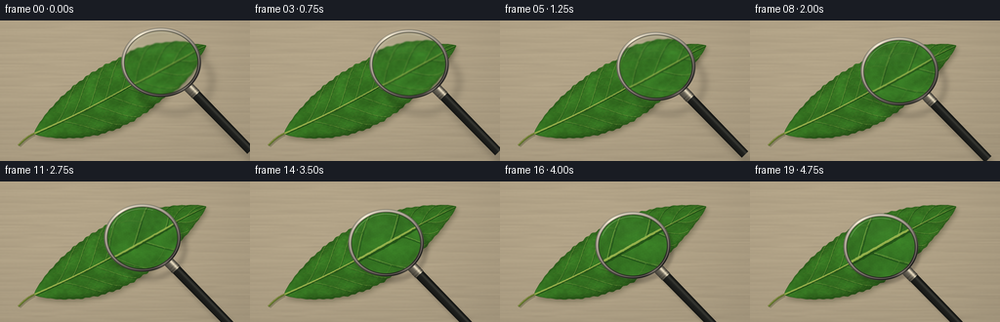
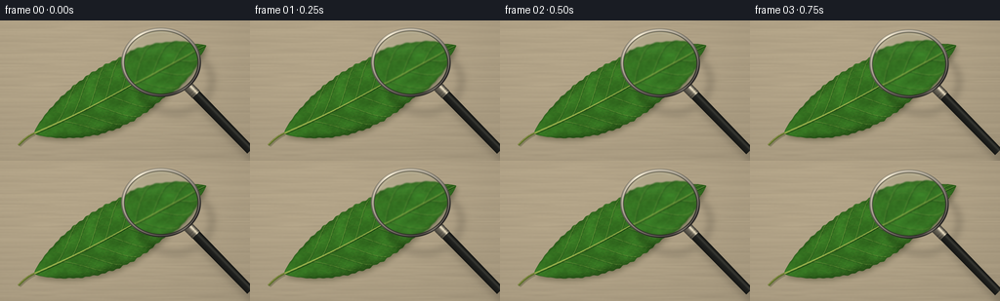

CODING AGENTS AS PIXEL WORLD MODELS
traex/GPT-6.1-Sol · phygen_068
点击播放 · 原生 RGB 像素
逐轮保存的候选
回放视频、检查图与代码变化。
每份候选均可单独播放。实际图片检查记录在下方工具轨迹中。
候选 01播放与检查图
点击播放 · 原生 RGB 像素


展开代码变化
--- 上一保存版本
+++ 本次保存版本
@@ -0,0 +1,230 @@
+from pathlib import Path
+import json
+import math
+import numpy as np
+from PIL import Image, ImageDraw, ImageFilter
+import artifact_io
+
+ROOT = Path(__file__).resolve().parent
+SPEC = json.loads((ROOT / 'task_spec.json').read_text())
+W,H=SPEC['width'],SPEC['height']
+SS=4
+TS=7
+rng=np.random.default_rng(68031)
+
+
+def noise(w,h,gx,gy):
+ a=rng.random((gy,gx),dtype=np.float32)
+ return np.asarray(Image.fromarray(a,mode='F').resize((w,h),Image.Resampling.BICUBIC))-.5
+
+
+def line(draw,pts,col,width):
+ draw.line([(int(x*TS),int(y*TS)) for x,y in pts],fill=col,width=max(1,int(width*TS)),joint='curve')
+
+# A single, high-resolution physical surface, shared by every frame.
+tw,th=W*TS,H*TS
+y,x=np.mgrid[:th,:tw].astype(np.float32)
+x/=TS;y/=TS
+n1=noise(tw,th,29,21);n2=noise(tw,th,133,97);n3=noise(tw,th,502,361)
+wood=noise(tw,th,9,105)
+grain=(np.sin(y*.55+x*.018+wood*3)+.35*np.sin(y*1.4+x*.03+wood*5))
+light=1-.12*((x-92)/240)**2-.13*((y-36)/170)**2
+bg=np.stack([(179+wood*7+grain*1.5+n2*1.2)*light,
+ (164+wood*7+grain*1.4+n2)*light,
+ (136+wood*6+grain*1.1+n2)*light],axis=-1)
+# A quiet, shallow depth-of-field tabletop.
+bg=np.clip(bg,0,255).astype(np.uint8)
+background=Image.fromarray(bg).filter(ImageFilter.GaussianBlur(TS*.18))
+
+base=np.array([35.,116.])
+direction=np.array([.893,-.45]);normal=np.array([.45,.893]);L=198.
+dx=x-base[0];dy=y-base[1]
+u=(dx*direction[0]+dy*direction[1])/L
+v=dx*normal[0]+dy*normal[1]
+uc=np.clip(u,0,1)
+width=35.5*np.sin(np.pi*uc)**.78*(1-.19*uc)
+# Slightly irregular margins; the sawteeth are subtle, not a stylized serration.
+edge_ripple=1+.016*np.sin(uc*157)+.012*np.sin(uc*67+.4)
+width*=edge_ripple
+centerline=1.7*np.sin(uc*np.pi*1.7)
+side=np.where(v>centerline,1.025,.965)
+rel=np.abs(v-centerline)/(width*side+.001)
+mask=(u>0)&(u<1)&(rel<1)
+mask_im=Image.fromarray((mask*255).astype(np.uint8))
+# Leaf shadow is soft but strongest immediately beside its raised edge.
+shadow=Image.new('L',(tw,th),0)
+shadow.paste(mask_im,(2*TS,3*TS))
+shadow=shadow.filter(ImageFilter.GaussianBlur(TS*2.3))
+background=Image.composite(Image.new('RGB',(tw,th),(62,60,37)),background,shadow.point(lambda a:int(a*.31)))
+contact=Image.new('L',(tw,th),0);contact.paste(mask_im,(TS,TS));contact=contact.filter(ImageFilter.GaussianBlur(TS*.8))
+background=Image.composite(Image.new('RGB',(tw,th),(77,78,40)),background,contact.point(lambda a:int(a*.13)))
+# Epidermal cells with a slightly raised, irregular polygonal pattern.
+# Smoothly distorted triangular lattice avoids a mechanically perfect mesh.
+xx=(u*L+n1*1.3+n2*.45)/1.32
+yy=(v+n1*.9+n2*.35)/1.15
+cx=xx+.32*np.sin(yy*1.8)
+cy=yy+.24*np.sin(xx*1.6)
+cell=np.minimum(np.abs(np.sin(np.pi*cx)),np.abs(np.sin(np.pi*(cy+.33*np.sin(cx*1.2)))))
+cells=np.exp(-cell*cell/0.027)
+surf=n1*14+n2*6+n3*2.2
+edge_dark=np.clip((rel-.78)/.22,0,1)*12
+shade=5.0*np.cos(v/30)+4*(-v/34)+4*np.sin(uc*3)-edge_dark
+leaf=np.stack([48+shade*.78+surf*.75-cells*2.4,
+ 104+shade*1.65+surf*1.7-cells*4.3,
+ 30+shade*.52+surf*.60-cells*1.9],axis=-1)
+leaf=np.clip(leaf,0,255).astype(np.uint8)
+leaf_im=Image.fromarray(leaf)
+
+# Curved pinnate ribs, and successively finer anastomosing veinlets.
+veins=Image.new('RGBA',(tw,th),(0,0,0,0));vd=ImageDraw.Draw(veins)
+def local(uu,vv):
+ p=base+direction*(L*uu)+normal*(vv+1.7*np.sin(uu*np.pi*1.7))
+ return tuple(p)
+def rib(u0,sign,t,extent=.96):
+ u1=u0+.12+.08*(1-u0)
+ uu=u0+(u1-u0)*(t**.85)
+ wi=35.5*np.sin(np.pi*np.clip(uu,0,1))**.78*(1-.19*uu)
+ vv=sign*wi*extent*(1-(1-t)**1.36)
+ return uu,vv
+
+ribs=[]
+for sign in [-1,1]:
+ for j,u0 in enumerate(np.arange(.12,.89,.096)+(0.027 if sign==1 else 0)):
+ if u0>.91:continue
+ ts=np.linspace(0,1,75)
+ pts=[local(*rib(u0,sign,t)) for t in ts]
+ ribs.append((u0,sign,pts))
+ # An illuminated bevel with a dark far side gives every vein relief.
+ line(vd,[(a+.27,b+.42) for a,b in pts],(17,57,16,115),1.05)
+ line(vd,pts,(108,150,55,210),.69*(1-.35*u0))
+ line(vd,[(a-.12,b-.17) for a,b in pts],(151,181,86,150),.20)
+ # Tertiaries fan from the secondary ribs and reconnect toward the next.
+ for k,t0 in enumerate([.25,.42,.59,.75,.87]):
+ au,av=rib(u0,sign,t0)
+ for branchside in [-1,1]:
+ pts3=[]
+ for q in np.linspace(0,1,32):
+ bu=au+branchside*(.044+.008*np.sin(k+u0))*q
+ bv=av+sign*(3.3+2*np.cos(t0*2))*np.sin(q*np.pi/2)
+ pts3.append(local(bu,bv))
+ line(vd,[(a+.16,b+.19) for a,b in pts3],(31,69,20,65),.33)
+ line(vd,pts3,(137,167,68,115),.26)
+ # Fine, irregular reticulation between the larger ribs.
+ if k<4:
+ for m in [0.4,0.75]:
+ ii=int(m*(len(pts3)-1));a,b=pts3[ii]
+ end=local(au+branchside*.034*m+.011,av+sign*(4.8+2.2*m))
+ pm=[(a+(end[0]-a)*q+.35*np.sin(q*np.pi),b+(end[1]-b)*q) for q in np.linspace(0,1,12)]
+ line(vd,pm,(149,173,73,66),.15)
+# The midrib narrows continuously towards the pointed tip.
+for a,b in zip(np.linspace(0,.992,180)[:-1],np.linspace(0,.992,180)[1:]):
+ pts=[local(a,0),local(b,0)]
+ wid=1.55*(1-a)**.65+.18
+ line(vd,[(p[0]+.45,p[1]+.52) for p in pts],(22,60,14,165),wid+.70)
+ line(vd,pts,(145,170,68,255),wid)
+ line(vd,[(p[0]-.19,p[1]-.26) for p in pts],(190,202,107,190),wid*.28)
+leaf_im=Image.alpha_composite(leaf_im.convert('RGBA'),veins).convert('RGB')
+scene=Image.composite(leaf_im,background,mask_im)
+# Slim living stem, continuous with the central rib.
+stem=Image.new('RGBA',(tw,th),(0,0,0,0));sd=ImageDraw.Draw(stem)
+pts=[(19+16*t,128-12*t-1.3*np.sin(np.pi*t)) for t in np.linspace(0,1,60)]
+line(sd,[(a+1,b+1) for a,b in pts],(54,60,29,80),3.1)
+line(sd,pts,(89,110,40,255),2.25)
+line(sd,[(a-.25,b-.4) for a,b in pts],(167,171,82,220),.55)
+scene=Image.alpha_composite(scene.convert('RGBA'),stem).convert('RGB')
+scene_arr=np.asarray(scene).astype(np.float32)
+
+
+def sample(arr,x,y):
+ # Bilinear sampling from the high-resolution surface.
+ x=np.clip(x*TS,0,tw-1.001);y=np.clip(y*TS,0,th-1.001)
+ ix=x.astype(np.int32);iy=y.astype(np.int32)
+ fx=(x-ix)[...,None];fy=(y-iy)[...,None]
+ return (arr[iy,ix]*(1-fx)*(1-fy)+arr[iy,ix+1]*fx*(1-fy)+arr[iy+1,ix]*(1-fx)*fy+arr[iy+1,ix+1]*fx*fy)
+
+rh,rw=H*SS,W*SS
+Y,X=np.mgrid[:rh,:rw].astype(np.float32);X=(X+.5)/SS;Y=(Y+.5)/SS
+plain=sample(scene_arr,X,Y)
+frames=[]
+for frame in range(SPEC['frames']):
+ t=frame/(SPEC['frames']-1)
+ e=t*t*(3-2*t)
+ # The tool lowers over the leaf. Its displaced cast shadow settles onto
+ # the surface, while the lens resolves ever more of the leaf structure.
+ lx=165-31*e;ly=43+24*e
+ radius=40.5-2.6*e;aspect=.865+.028*e
+ ox=X-lx;oy=(Y-ly)/aspect
+ rr=np.sqrt(ox*ox+oy*oy)
+ ang=np.arctan2(oy,ox)
+ out=plain.copy()
+ # Shadow of the ring and handle: broad at first, tighter when near.
+ sh=Image.new('L',(rw,rh));sdraw=ImageDraw.Draw(sh)
+ sx=11*(1-e)+3;sy=15*(1-e)+4
+ bbox=((lx-radius+sx)*SS,(ly-radius*aspect+sy)*SS,(lx+radius+sx)*SS,(ly+radius*aspect+sy)*SS)
+ sdraw.ellipse(bbox,outline=145,width=int(5.5*SS))
+ theta=.80
+ ux,uy=math.cos(theta),math.sin(theta)
+ start=(lx+ux*(radius-1),ly+uy*(radius-1)*aspect)
+ end=(start[0]+ux*92,start[1]+uy*92)
+ sdraw.line(((start[0]+sx)*SS,(start[1]+sy)*SS,(end[0]+sx)*SS,(end[1]+sy)*SS),fill=126,width=10*SS)
+ sh=sh.filter(ImageFilter.GaussianBlur((3.4-2.3*e)*SS))
+ alpha=np.asarray(sh).astype(np.float32)/255*.32
+ out*=1-alpha[...,None]
+ # Flat glass lens with an optical central enlargement and mild edge barrel distortion.
+ mag=1.25+1.30*e
+ rho=np.clip(rr/(radius-3.2),0,1)
+ factor=(1+.13*rho**4)/mag
+ tx=lx+ox*factor;ty=ly+(Y-ly)*factor
+ lens=sample(scene_arr,tx,ty)
+ # Resolve into crisp focus as the magnifying glass comes over the leaf.
+ blur=.62*(1-e)
+ if blur>.035:
+ lens=np.asarray(Image.fromarray(np.clip(lens,0,255).astype(np.uint8)).filter(ImageFilter.GaussianBlur(blur*SS))).astype(np.float32)
+ lens=lens*np.array([.991,1.018,1.006])+np.array([1.7,1.2,2.5])
+ # Very restrained skylight sheen, preserving visibility through clear glass.
+ sheen=np.exp(-((ox+10)/28)**2-((oy+19)/8)**2)*(5.0-2*e)
+ lens+=sheen[...,None]
+ inside=np.clip((radius-3.1-rr)*SS,0,1)
+ out=out*(1-inside[...,None])+lens*inside[...,None]
+ # Render a black, gently tapered handle with continuous cylindrical highlights.
+ vx=X-start[0];vy=Y-start[1]
+ along=vx*ux+vy*uy;cross=-vx*uy+vy*ux
+ thickness=5.3-.006*np.clip(along,0,92)
+ handlemask=np.clip((thickness-np.abs(cross))*SS,0,1)*np.clip((along+1)*SS,0,1)*np.clip((92-along)*SS,0,1)
+ gloss=np.exp(-((cross+1.8)/1.3)**2)
+ ridge=np.cos(np.clip(cross/thickness,-1,1)*np.pi/2)
+ tiny=np.sin(along*2.9)*.6
+ handle=np.stack([18+ridge*12+gloss*26+tiny,19+ridge*12+gloss*26+tiny,17+ridge*12+gloss*23+tiny],axis=-1)
+ out=out*(1-handlemask[...,None])+handle*handlemask[...,None]
+ # Small turned metal ferrule connecting handle and rim.
+ collar=(along>0)&(along<12)&(np.abs(cross)<5.5)
+ met=65+130*np.exp(-((cross+2)/1.65)**2)+35*ridge
+ ferrule=np.stack([met*1.02,met*.97,met*.85],axis=-1)
+ rings=(np.sin(along*2.0)>.75)&(along>7)
+ ferrule-=rings[...,None]*24
+ out=np.where(collar[...,None],ferrule,out)
+ # Four concentric bands make the rim unmistakably polished metal, not a flat circle.
+ a=ang
+ glint=np.exp(-((np.sin(a+2.2))/.22)**2)
+ brightness=115+64*np.cos(a+2.15)+glint*38
+ rad=rr-(radius-1.7)
+ bevel=31*np.cos(rad*2.6)+20*np.sin(rad*3.3)
+ metal=brightness+bevel
+ rim=np.stack([metal*1.04+4,metal*.995+3,metal*.88+6],axis=-1)
+ band=np.clip((radius+.45-rr)*SS,0,1)*np.clip((rr-(radius-3.1))*SS,0,1)
+ out=out*(1-band[...,None])+rim*band[...,None]
+ # Dark retaining lip, outer edge, and an uninterrupted upper reflection.
+ lip=np.exp(-((rr-(radius-3.0))/.32)**2)*.76
+ out=out*(1-lip[...,None])+np.array([38,45,33])*lip[...,None]
+ outer=np.exp(-((rr-(radius+.35))/.20)**2)*.60
+ out=out*(1-outer[...,None])+np.array([52,52,44])*outer[...,None]
+ highlight=np.exp(-((rr-(radius-.45))/.20)**2)*np.clip(-np.sin(a)-.1,0,1)*.86
+ out=out*(1-highlight[...,None])+np.array([251,248,226])*highlight[...,None]
+ # Two delicate glass reflections at the perimeter, with no opaque overlay.
+ arc=np.exp(-((rr-(radius-5.0))/.26)**2)
+ arc*=((a>-2.8)&(a<-1.25)).astype(float)*.35
+ out=out*(1-arc[...,None])+np.array([227,242,221])*arc[...,None]
+ im=Image.fromarray(np.clip(out,0,255).astype(np.uint8)).resize((W,H),Image.Resampling.LANCZOS)
+ frames.append(np.asarray(im))
+artifact_io.save(np.stack(frames).astype(np.uint8), ROOT)
+print(f'Saved {len(frames)} RGB frames, {W}x{H}, {SPEC["fps"]} fps.')
可观测工具轨迹
实际执行的命令与返回图片。
命令 1exit 0
/bin/bash -lc 'ls -la && cat prompt.txt && cat GENERATION_RULES.md && cat task_spec.json'
命令 2exit 0
/bin/bash -lc "cat artifact_io.py && python - <<'PY' import numpy, PIL print(numpy.__version__, PIL.__version__) PY"
命令 3exit 0
/bin/bash -lc "cat > generate.py <<'PY'
from pathlib import Path
import json
import math
import numpy as np
from PIL import Image, ImageDraw, ImageFilter
import artifact_io
ROOT = Path(__file__).resolve().parent
SPEC = json.loads((ROOT / 'task_spec.json').read_text())
W,H=SPEC['width'],SPEC['height']
SS=4
TS=7
rng=np.random.default_rng(68031)
def noise(w,h,gx,gy):
a=rng.random((gy,gx),dtype=np.float32)
return np.asarray(Image.fromarray(a,mode='F').resize((w,h),Image.Resampling.BICUBIC))-.5
def line(draw,pts,col,width):
draw.line([(int(x*TS),int(y*TS)) for x,y in pts],fill=col,width=max(1,int(width*TS)),joint='curve')
# A single, high-resolution physical surface, shared by every frame.
tw,th=W*TS,H*TS
y,x=np.mgrid[:th,:tw].astype(np.float32)
x/=TS;y/=TS
n1=noise(tw,th,29,21);n2=noise(tw,th,133,97);n3=noise(tw,th,502,361)
wood=noise(tw,th,9,105)
grain=(np.sin(y*.55+x*.018+wood*3)+.35*np.sin(y*1.4+x*.03+wood*5))
light=1-.12*((x-92)/240)**2-.13*((y-36)/170)**2
bg=np.stack([(179+wood*7+grain*1.5+n2*1.2)*light,
(164+wood*7+grain*1.4+n2)*light,
(136+wood*6+grain*1.1+n2)*light],axis=-1)
# A quiet, shallow depth-of-field tabletop.
bg=np.clip(bg,0,255).astype(np.uint8)
background=Image.fromarray(bg).filter(ImageFilter.GaussianBlur(TS*.18))
base=np.array([35.,116.])
direction=np.array([.893,-.45]);normal=np.array([.45,.893]);L=198.
dx=x-base[0];dy=y-base[1]
u=(dx*direction[0]+dy*direction[1])/L
v=dx*normal[0]+dy*normal[1]
uc=np.clip(u,0,1)
width=35.5*np.sin(np.pi*uc)**.78*(1-.19*uc)
# Slightly irregular margins; the sawteeth are subtle, not a stylized serration.
edge_ripple=1+.016*np.sin(uc*157)+.012*np.sin(uc*67+.4)
width*=edge_ripple
centerline=1.7*np.sin(uc*np.pi*1.7)
side=np.where(v>centerline,1.025,.965)
rel=np.abs(v-centerline)/(width*side+.001)
mask=(u>0)&(u<1)&(rel<1)
mask_im=Image.fromarray((mask*255).astype(np.uint8))
# Leaf shadow is soft but strongest immediately beside its raised edge.
shadow=Image.new('L',(tw,th),0)
shadow.paste(mask_im,(2*TS,3*TS))
shadow=shadow.filter(ImageFilter.GaussianBlur(TS*2.3))
background=Image.composite(Image.new('RGB',(tw,th),(62,60,37)),background,shadow.point(lambda a:int(a*.31)))
contact=Image.new('L',(tw,th),0);contact.paste(mask_im,(TS,TS));contact=contact.filter(ImageFilter.GaussianBlur(TS*.8))
background=Image.composite(Image.new('RGB',(tw,th),(77,78,40)),background,contact.point(lambda a:int(a*.13)))
# Epidermal cells with a slightly raised, irregular polygonal pattern.
# Smoothly distorted triangular lattice avoids a mechanically perfect mesh.
xx=(u*L+n1*1.3+n2*.45)/1.32
yy=(v+n1*.9+n2*.35)/1.15
cx=xx+.32*np.sin(yy*1.8)
cy=yy+.24*np.sin(xx*1.6)
cell=np.minimum(np.abs(np.sin(np.pi*cx)),np.abs(np.sin(np.pi*(cy+.33*np.sin(cx*1.2)))))
cells=np.exp(-cell*cell/0.027)
surf=n1*14+n2*6+n3*2.2
edge_dark=np.clip((rel-.78)/.22,0,1)*12
shade=5.0*np.cos(v/30)+4*(-v/34)+4*np.sin(uc*3)-edge_dark
leaf=np.stack([48+shade*.78+surf*.75-cells*2.4,
104+shade*1.65+surf*1.7-cells*4.3,
30+shade*.52+surf*.60-cells*1.9],axis=-1)
leaf=np.clip(leaf,0,255).astype(np.uint8)
leaf_im=Image.fromarray(leaf)
# Curved pinnate ribs, and successively finer anastomosing veinlets.
veins=Image.new('RGBA',(tw,th),(0,0,0,0));vd=ImageDraw.Draw(veins)
def local(uu,vv):
p=base+direction*(L*uu)+normal*(vv+1.7*np.sin(uu*np.pi*1.7))
return tuple(p)
def rib(u0,sign,t,extent=.96):
u1=u0+.12+.08*(1-u0)
uu=u0+(u1-u0)*(t**.85)
wi=35.5*np.sin(np.pi*np.clip(uu,0,1))**.78*(1-.19*uu)
vv=sign*wi*extent*(1-(1-t)**1.36)
return uu,vv
ribs=[]
for sign in [-1,1]:
for j,u0 in enumerate(np.arange(.12,.89,.096)+(0.027 if sign==1 else 0)):
if u0>.91:continue
ts=np.linspace(0,1,75)
pts=[local(*rib(u0,sign,t)) for t in ts]
ribs.append((u0,sign,pts))
# An illuminated bevel with a dark far side gives every vein relief.
line(vd,[(a+.27,b+.42) for a,b in pts],(17,57,16,115),1.05)
line(vd,pts,(108,150,55,210),.69*(1-.35*u0))
line(vd,[(a-.12,b-.17) for a,b in pts],(151,181,86,150),.20)
# Tertiaries fan from the secondary ribs and reconnect toward the next.
for k,t0 in enumerate([.25,.42,.59,.75,.87]):
au,av=rib(u0,sign,t0)
for branchside in [-1,1]:
pts3=[]
for q in np.linspace(0,1,32):
bu=au+branchside*(.044+.008*np.sin(k+u0))*q
bv=av+sign*(3.3+2*np.cos(t0*2))*np.sin(q*np.pi/2)
pts3.append(local(bu,bv))
line(vd,[(a+.16,b+.19) for a,b in pts3],(31,69,20,65),.33)
line(vd,pts3,(137,167,68,115),.26)
# Fine, irregular reticulation between the larger ribs.
if k<4:
for m in [0.4,0.75]:
ii=int(m*(len(pts3)-1));a,b=pts3[ii]
end=local(au+branchside*.034*m+.011,av+sign*(4.8+2.2*m))
pm=[(a+(end[0]-a)*q+.35*np.sin(q*np.pi),b+(end[1]-b)*q) for q in np.linspace(0,1,12)]
line(vd,pm,(149,173,73,66),.15)
# The midrib narrows continuously towards the pointed tip.
for a,b in zip(np.linspace(0,.992,180)[:-1],np.linspace(0,.992,180)[1:]):
pts=[local(a,0),local(b,0)]
wid=1.55*(1-a)**.65+.18
line(vd,[(p[0]+.45,p[1]+.52) for p in pts],(22,60,14,165),wid+.70)
line(vd,pts,(145,170,68,255),wid)
line(vd,[(p[0]-.19,p[1]-.26) for p in pts],(190,202,107,190),wid*.28)
leaf_im=Image.alpha_composite(leaf_im.convert('RGBA'),veins).convert('RGB')
scene=Image.composite(leaf_im,background,mask_im)
# Slim living stem, continuous with the central rib.
stem=Image.new('RGBA',(tw,th),(0,0,0,0));sd=ImageDraw.Draw(stem)
pts=[(19+16*t,128-12*t-1.3*np.sin(np.pi*t)) for t in np.linspace(0,1,60)]
line(sd,[(a+1,b+1) for a,b in pts],(54,60,29,80),3.1)
line(sd,pts,(89,110,40,255),2.25)
line(sd,[(a-.25,b-.4) for a,b in pts],(167,171,82,220),.55)
scene=Image.alpha_composite(scene.convert('RGBA'),stem).convert('RGB')
scene_arr=np.asarray(scene).astype(np.float32)
def sample(arr,x,y):
# Bilinear sampling from the high-resolution surface.
x=np.clip(x*TS,0,tw-1.001);y=np.clip(y*TS,0,th-1.001)
ix=x.astype(np.int32);iy=y.astype(np.int32)
fx=(x-ix)[...,None];fy=(y-iy)[...,None]
return (arr[iy,ix]*(1-fx)*(1-fy)+arr[iy,ix+1]*fx*(1-fy)+arr[iy+1,ix]*(1-fx)*fy+arr[iy+1,ix+1]*fx*fy)
rh,rw=H*SS,W*SS
Y,X=np.mgrid[:rh,:rw].astype(np.float32);X=(X+.5)/SS;Y=(Y+.5)/SS
plain=sample(scene_arr,X,Y)
frames=[]
for frame in range(SPEC['frames']):
t=frame/(SPEC['frames']-1)
e=t*t*(3-2*t)
# The tool lowers over the leaf. Its displaced cast shadow settles onto
# the surface, while the lens resolves ever more of the leaf structure.
lx=165-31*e;ly=43+24*e
radius=40.5-2.6*e;aspect=.865+.028*e
ox=X-lx;oy=(Y-ly)/aspect
rr=np.sqrt(ox*ox+oy*oy)
ang=np.arctan2(oy,ox)
out=plain.copy()
# Shadow of the ring and handle: broad at first, tighter when near.
sh=Image.new('L',(rw,rh));sdraw=ImageDraw.Draw(sh)
sx=11*(1-e)+3;sy=15*(1-e)+4
bbox=((lx-radius+sx)*SS,(ly-radius*aspect+sy)*SS,(lx+radius+sx)*SS,(ly+radius*aspect+sy)*SS)
sdraw.ellipse(bbox,outline=145,width=int(5.5*SS))
theta=.80
ux,uy=math.cos(theta),math.sin(theta)
start=(lx+ux*(radius-1),ly+uy*(radius-1)*aspect)
end=(start[0]+ux*92,start[1]+uy*92)
sdraw.line(((start[0]+sx)*SS,(start[1]+sy)*SS,(end[0]+sx)*SS,(end[1]+sy)*SS),fill=126,width=10*SS)
sh=sh.filter(ImageFilter.GaussianBlur((3.4-2.3*e)*SS))
alpha=np.asarray(sh).astype(np.float32)/255*.32
out*=1-alpha[...,None]
# Flat glass lens with an optical central enlargement and mild edge barrel distortion.
mag=1.25+1.30*e
rho=np.clip(rr/(radius-3.2),0,1)
factor=(1+.13*rho**4)/mag
tx=lx+ox*factor;ty=ly+(Y-ly)*factor
lens=sample(scene_arr,tx,ty)
# Resolve into crisp focus as the magnifying glass comes over the leaf.
blur=.62*(1-e)
if blur>.035:
lens=np.asarray(Image.fromarray(np.clip(lens,0,255).astype(np.uint8)).filter(ImageFilter.GaussianBlur(blur*SS))).astype(np.float32)
lens=lens*np.array([.991,1.018,1.006])+np.array([1.7,1.2,2.5])
# Very restrained skylight sheen, preserving visibility through clear glass.
sheen=np.exp(-((ox+10)/28)**2-((oy+19)/8)**2)*(5.0-2*e)
lens+=sheen[...,None]
inside=np.clip((radius-3.1-rr)*SS,0,1)
out=out*(1-inside[...,None])+lens*inside[...,None]
# Render a black, gently tapered handle with continuous cylindrical highlights.
vx=X-start[0];vy=Y-start[1]
along=vx*ux+vy*uy;cross=-vx*uy+vy*ux
thickness=5.3-.006*np.clip(along,0,92)
handlemask=np.clip((thickness-np.abs(cross))*SS,0,1)*np.clip((along+1)*SS,0,1)*np.clip((92-along)*SS,0,1)
gloss=np.exp(-((cross+1.8)/1.3)**2)
ridge=np.cos(np.clip(cross/thickness,-1,1)*np.pi/2)
tiny=np.sin(along*2.9)*.6
handle=np.stack([18+ridge*12+gloss*26+tiny,19+ridge*12+gloss*26+tiny,17+ridge*12+gloss*23+tiny],axis=-1)
out=out*(1-handlemask[...,None])+handle*handlemask[...,None]
# Small turned metal ferrule connecting handle and rim.
collar=(along>0)&(along<12)&(np.abs(cross)<5.5)
met=65+130*np.exp(-((cross+2)/1.65)**2)+35*ridge
ferrule=np.stack([met*1.02,met*.97,met*.85],axis=-1)
rings=(np.sin(along*2.0)>.75)&(along>7)
ferrule-=rings[...,None]*24
out=np.where(collar[...,None],ferrule,out)
# Four concentric bands make the rim unmistakably polished metal, not a flat circle.
a=ang
glint=np.exp(-((np.sin(a+2.2))/.22)**2)
brightness=115+64*np.cos(a+2.15)+glint*38
rad=rr-(radius-1.7)
bevel=31*np.cos(rad*2.6)+20*np.sin(rad*3.3)
metal=brightness+bevel
rim=np.stack([metal*1.04+4,metal*.995+3,metal*.88+6],axis=-1)
band=np.clip((radius+.45-rr)*SS,0,1)*np.clip((rr-(radius-3.1))*SS,0,1)
out=out*(1-band[...,None])+rim*band[...,None]
# Dark retaining lip, outer edge, and an uninterrupted upper reflection.
lip=np.exp(-((rr-(radius-3.0))/.32)**2)*.76
out=out*(1-lip[...,None])+np.array([38,45,33])*lip[...,None]
outer=np.exp(-((rr-(radius+.35))/.20)**2)*.60
out=out*(1-outer[...,None])+np.array([52,52,44])*outer[...,None]
highlight=np.exp(-((rr-(radius-.45))/.20)**2)*np.clip(-np.sin(a)-.1,0,1)*.86
out=out*(1-highlight[...,None])+np.array([251,248,226])*highlight[...,None]
# Two delicate glass reflections at the perimeter, with no opaque overlay.
arc=np.exp(-((rr-(radius-5.0))/.26)**2)
arc*=((a>-2.8)&(a<-1.25)).astype(float)*.35
out=out*(1-arc[...,None])+np.array([227,242,221])*arc[...,None]
im=Image.fromarray(np.clip(out,0,255).astype(np.uint8)).resize((W,H),Image.Resampling.LANCZOS)
frames.append(np.asarray(im))
artifact_io.save(np.stack(frames).astype(np.uint8), ROOT)
print(f'Saved {len(frames)} RGB frames, {W}x{H}, {SPEC[\"fps\"]} fps.')
PY
python generate.py"命令 4exit 0
/bin/bash -lc "python - <<'PY'
from pathlib import Path
import numpy as np
from PIL import Image
p=Path('.')
a=np.load('pixels.npz')['pixels']
assert a.shape==(144,256,20)
assert len(list((p/'frames').glob('*.png')))==20
for f in (p/'frames').glob('*.png'):
im=Image.open(f)
assert im.mode=='RGB' and im.size==(256,144)
print('Validated 20 RGB frames and required saved artifacts.')
print('Frame change mean:', np.mean(np.abs(np.asarray(Image.open('frames/19.png')).astype(float)-np.asarray(Image.open('frames/00.png')).astype(float))))
print('Artifacts:', ', '.join(f.name for f in [p/'index.html',p/'pixels.npz',p/'inspection.png',p/'generate.py'] if f.exists()))
PY"保存候选 1 份；完成命令 4 次；可验证图片返回 0 张。原始 API 响应与完整日志保留在本地。